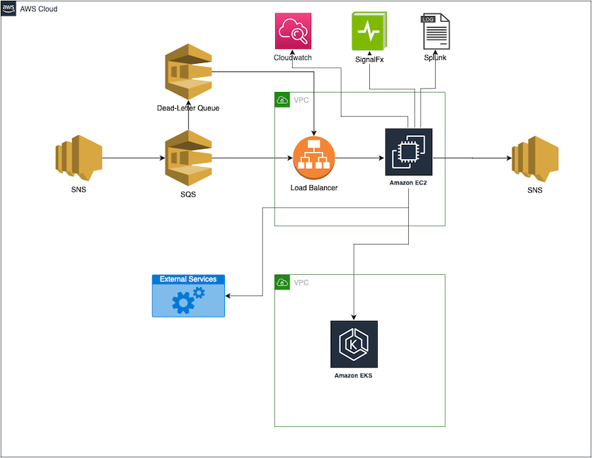

Over the last 4 weeks, I helped migrate one of our SQS processing pipelines from EC2 into an existing EKS cluster.
I wanted to share the journey of how I went from knowing nothing about Terraform and Kubernetes to successfully completing the migration off from Cloudformation and EC2 into Terraform with EKS.
Prior to migration, the application was running on 15 t2.medium EC2 instances. The average message processing capacity over the last month prior to migration was nearly 75 message per second per instance.
The resources were managed through a CloudFormation stack.
We have two AWS accounts, one each for test and production. And we use Jenkins to deploy into these environments.
Here is a high-level view of the application.

I spoke to our in-house Kubernetes expert on how to approach this, and he helped shape the approach of the migration.
He suggested I break-down the effort into two-halves. The first half was to ensure that all existing Cloudformation resources were imported into Terraform. The second half was to add permission and deployment details about the existing EKS cluster.
Having had the overarching goal in my mind, I set about first learning what Kubernetes was.
I started with the Kubernetes concepts page from the official documentation:
Kubernetes / Concepts
However, this was too much information to parse. I reckoned I would have to spend at least some hours or days for Terraform as well, and I needed to be productive soon. We had refined the effort to be completed in a single sprint (2 weeks).
I searched around and came across an excellent Youtube video by Steve Tegeler: Kubernetes in 5 minutes
This helped me immensely. I went back to the official documentation and re-read all pages under the Overview that helped solidify my understanding: Kubernetes / Overview
I then went through an AWS project that showed how to deploy a Kubernetes application with Amazon EKS: Amazon EKS Hands-On.
I did this in my own account. Although the cost should have been 60 cents per the documentation, I had to take care of my daughter mid-way through the exercise, so the cluster was running for maybe a couple of extra hours so that cost me an extra dollar.
While I was on the AWS pages, I also read about EKS and how it was a managed control plane for Kubernetes, and by this time, I had a fairly good idea of what was needed to get off the EC2 instances and into the cluster.
The other half of the unknown for me was Terraform. However, Terraform was rather simple to process.
You only need to understand `provider`, `import`, `resource`, `data`, `output`, and `module` to really get started.
The official documentation is sufficient. E.g. to import a queue, I would search `terraform sqs`, and the official documentation would be sufficient to understand how to import my queue: Terraform SQS Resource
Here are the high level steps for migration.
The deployment plan was simple:
We did face an issue during the canary, so we aborted the first attempt. Our dead-letter queue saw ~50 new messages during the ~.5/1 minute the canary was up. Splunk indicated that our private key server was not allowing the application deployed in kubernetes access to one of the API keys. This was not recognized in test because this was an external service and we only had production endpoints for this service. Setting the right IAM policy fixed the issue.
It took me 4 weeks to finish this and go into production.
The existing EKS cluster has 9 nodes, each node an m5.4xlarge EC2 instance. Effectively, this is nearly 10x the capacity our application needs. However, this cluster has other applications too, with more on the way, so our application is essentially sharing cluster capacity.
We set the application to scale to 15 pods, and the application seems to be maintaining its performance levels since before the migration.
I was initially frustrated because I did not really understand the benefit of moving from EC2 instances. However, somewhere along the way, I started enjoying the process of migration.
Here is what I still see as `open questions`.
My reservations about the migration remain, hopefully we will see some benefits and I will have another story to tell in future.